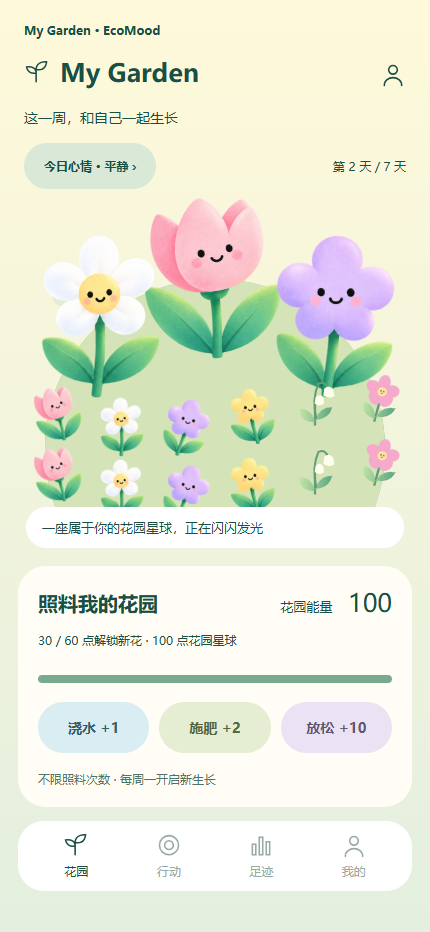

2026 年 8–9 月
浙江创智科技 · 数据工程师实习生
在覆盖 21 家政府单位的数据安全专项行动中，我整理检查台账、交叉核对数据并形成报告问题与改进建议；报告数量待补。
萧准 · 浙江工业大学软件工程
用数据分析、机器学习与交互设计，把问题做成可体验的作品。
寻求实习机会 · 数据分析 / 机器学习 / 软件开发 / 交互设计
专项行动覆盖政府单位
视觉问答去重评测图片
艺术史跨媒介策展样本

让模型回答接受逐题核对
针对多模态问答评估，我搭建单图问答、网页演示与批量推理流程，用去重题集逐题核对回答，形成可浏览的评测案例。
30 张去重图片 · 3 类问题 · 准确率待补
查看项目 →


把心情记录整理成可交互原型
面向日常心情记录场景，我梳理信息架构、界面布局与交互流程，输出可交互 App 原型；用户测试结果待补。
页面数待补 · 测试人数待补
查看项目 →
从英文帖子走到分类结果
面向英文社交媒体文本，我完成预处理、特征提取与模型训练，并以混淆矩阵及模型对比图呈现实验结果；最终指标待补。
样本数待补 · 最终 F2 待补
查看项目 →
把艺术史整理成可探索的展览
面向欧洲艺术史浏览，我清洗并结构化作品数据，将联动图表、筛选器与画廊式视图接入网页，形成覆盖五个时期的交互展示。
100 件策展样本 · 5 个艺术时期
查看项目 →将原始数据整理成结构化数据、检查台账与对比图表，让问题和结果可追溯。
将训练与推理流程整理成评测题集、实验图表和案例页面，呈现模型回答与误判。
将信息架构与界面流程转成可交互原型和可视化网页，连接浏览、筛选与反馈。
2026 年 8–9 月
在覆盖 21 家政府单位的数据安全专项行动中，我整理检查台账、交叉核对数据并形成报告问题与改进建议；报告数量待补。
2024 年至今
围绕学生活动，我制作海报、路演幻灯片与宣传物料，组织摄影与官方账号内容输出；活动数与传播结果待补。
中国浙江嘉兴